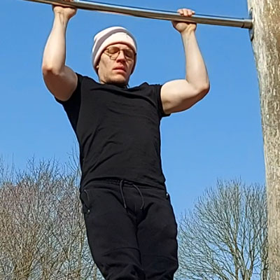
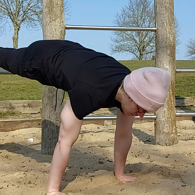
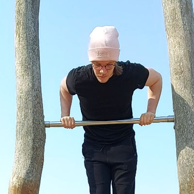
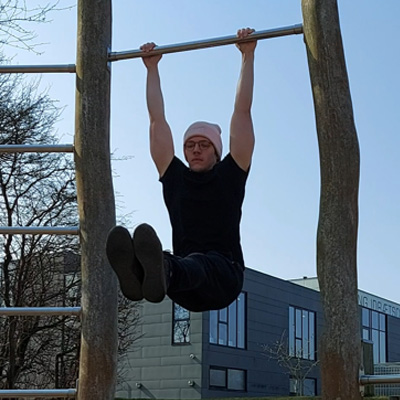
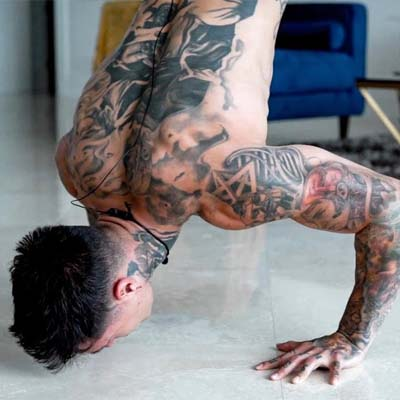

»
Articles»
TrainingWritten by Tom Hansen -
5 Upper Body Exercises to MASTER Calisthenics
Being able to do a muscle-up - or perhaps a full planche push-up
- shows incredible strength and requires immense amounts of dedication to achieve.
But they
can be achieved for free.
You’ve probably thought to yourself: Man, I’d love to be able to do that
- but the goal
seems
huge and most likely impossible to achieve.
Of course, it does.
No human should be able
to defy
gravity like that.
Like with every huge task, breaking them into much smaller tasks - and then those smaller tasks into even smaller tasks - is a great way of accomplishing your goal.
I’m going to show you five upper body calisthenics exercises.
If you master these five
fundamentals,
you’ll be able to master all aspects of calisthenics.
- That even includes building your way
up to your
first muscle-up.
Remember - It’s a marathon, not a race. Set small goals for yourself and achieve your main goal step by step.
There are three main aspects of calisthenics: pushing, pulling, and holding.
For example - in pulling - the first progression most people will start off with is the Australian pull up.
Over time it will turn into jumping pull ups, then into pull ups, then into high pull ups, and
so on.
This is called progressive overload; progressively making your
exercise harder in order
to become stronger.
This leads us to our first exercise:
1. Pull-ups

As with most calisthenics exercises - the pull-up is a compound movement - this means that you
use
many different muscles at once to perform the movement.
The pull-up is the ultimate form
of
compound movement, it uses nearly every muscle in your upper body with the main focus being the
back muscles.
Want to learn how to perform your first pull-up?
2. Push-ups

This one's a classic - even the most esteemed athletes have this exercise in their workout
routine.
The push-up is also a compound movement - but instead of focusing on the back - this exercise
focuses on the chest and triceps.
Want to learn how to perform your first push-up?
3. Dips

The dip is the counterpart to the pull-up - instead of pulling your entire weight - you push
it.
You might be thinking: well why would you need to do push-ups then?
And you're right, the dip and the push-up work the same muscles - although with different
focuses.
But part of mastering your upper body is mastering all three directions: Up, forward, and down.
Want to learn how to perform your first dip?
4. L-sit hold

The L-sit hold seems easy at first glance - but once you get on the bar (or the floor) and
attempt it you learn just how weak
your core is.
The L-sit hold is the fundamental hold exercise of calisthenics.
It
trains your core immensely.
And without a strong core most of the other exercises will be much harder.
So get those
L-sits going.
Want to learn how to perform your first L-sit hold?
5. Handstand push-ups

The final fundamental of mastering your upper body - the handstand push-up.
Not only is
it the last exercise on this list -
it's also the third and final direction of the pushing fundamental - Up.
This is probably the single greatest exercise for getting massive shoulders on a budget.
And don't forget - your shoulders are a bigger muscle group than your chest - So if you want
that V-taper illusion you better get pushing.